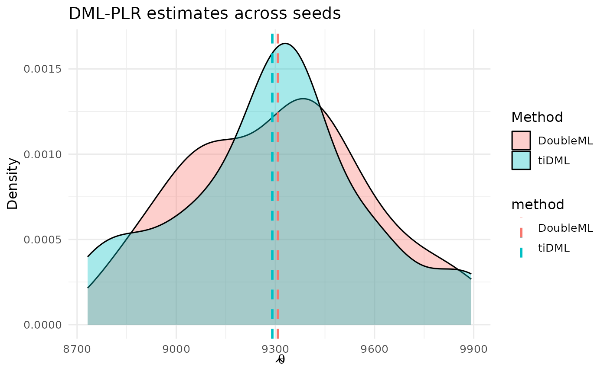

DoubleML Package
package-replication.RmdReplication of DoubleML results with tiDML
I use the 401k data from Chernozhukov et al. (2018) to replicate results from their package under a few different specifications.
The goal is to show that tiDML::dml_plr() can produce
comparable results with much less code.
Get data and import packages
Note I use the same data (401k) and variables across both specifications.
library(tiDML)
library(dplyr)
library(purrr)
library(tibble)
library(ggplot2)
library(DoubleML)
library(mlr3)
library(mlr3learners)
df401k <- DoubleML::fetch_401k(return_type = "data.frame", instrument = FALSE)
y_col <- "net_tfa" # or "tw" depending on the example
d_col <- "e401"
x_cols <- c("age","inc","educ","fsize","marr","twoearn","db","pira","hown")
tiDML function call
Following Chernozhukov, I use random forest in both stages but the first is classification while the second is regression.
run_tidml <- function(seed, df, y, d, x, grid_trees = 1200L, n_folds = 5L) {
set.seed(seed)
# Set regression model for Y variable
rf_reg <- parsnip::rand_forest(trees = 500) |>
parsnip::set_mode("regression") |>
parsnip::set_engine("ranger", num.threads = 1)
# Set classification model for D variable, which is binary
rf_classif <- parsnip::rand_forest(trees = 500) |>
parsnip::set_mode("classification") |>
parsnip::set_engine("ranger", num.threads = 1, probability = TRUE)
df <- df |> mutate(!!d := as.factor(!!rlang::sym(d)))
fit_tidml <- dml_plr(
data = df,
y = !!rlang::sym(y),
d = !!rlang::sym(d),
x = x,
g_model = rf_reg,
m_model = rf_classif,
grid_size = list(m = 15, g = 15)
)
tibble(
method = "tiDML",
seed = seed,
theta = unname(fit_tidml$theta),
se = unname(fit_tidml$se)
) |>
mutate(
lwr = theta - qnorm(0.975) * se,
upr = theta + qnorm(0.975) * se
)
}DoubleML function call
run_dml <- function(seed, df, y, d, x, grid_trees = 1200L, n_folds = 5L) {
## DoubleML :: PLR with ranger
ml_l <- lrn("regr.ranger",
num.trees = grid_trees,
num.threads = 1,
respect.unordered.factors = "order")
ml_m <- lrn(
"classif.ranger",
num.trees = grid_trees,
num.threads = 1,
predict_type="prob"
)
dml_data <- DoubleMLData$new(
data = df,
y_col = y,
d_cols = d,
x_cols = x
)
dml <- DoubleMLPLR$new(
dml_data,
ml_l = ml_l,
ml_m = ml_m,
n_folds = n_folds,
score = "partialling out"
)
dml$fit()
ci <- dml$confint(level = 0.95)
return(tibble(
method = "DoubleML",
seed = seed,
theta = as.numeric(dml$coef),
se = as.numeric(dml$se),
lwr = as.numeric(ci[1]),
upr = as.numeric(ci[2])
)
)
}Run both methods across many replications
replications <- 2L
run_both <- function(seed, df, y, d, x, grid_trees = 1200L, n_folds = 5L) {
tidml_row <- run_tidml(seed, df, y, d, x, grid_trees, n_folds)
dml_row <- run_dml(seed, df, y, d, x, grid_trees, n_folds)
bind_rows(tidml_row, dml_row)
}
# Keep this small for CRAN; bump locally
seeds <- 401 + 0:replications-1 # 10 reps for vignette speed
res <- map_dfr(
seeds,
~ run_both(.x, df = df401k, y = y_col, d = d_col, x = x_cols)
)Method-by-method densities
ggplot(res, aes(theta, fill = method)) +
geom_density(alpha = 0.35) +
labs(
title = "DML-PLR estimates across seeds",
x = expression(hat(theta)), y = "Density", fill = "Method"
) +
theme_minimal(base_size = 12)